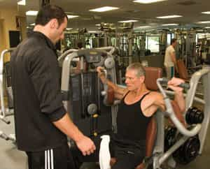

< < < Back
5 Things You Should Be Doing If You Consume Porn – Return Of Kings
Several months ago, Roosh outlined the debilitating effects of readily accessible porn on men. Whilst I agree with basically all of what he said, it’s safe to assume even some regular ROK readers are still feeding semi-rampant porn-related addictions. In addition to the literally hundreds of hours every few years men waste by indulging in porn, the damage to your underlying psychology is immense and in many cases neurological.
Asking non-ROK readers in particular to go cold turkey on porn, however, would appear to be a Herculean task for most. As our community grows and our ideology is disseminated further afield, more men may find it easier to leave the world of online and other smut because their social environment reinforces our ideals. Until that time, we need a framework men can meet more easily.
A useful starting point, therefore, is to compare porn with behaviors a man should be engaging in. If you’re finding kicking the porn habit especially taxing but have the rest of your shit together, the prospects of gradual improvement are much more real.
When you find yourself watching porn and not doing these things, don’t whinge or become defensive. Just commit to change.
1. Going to the gym three to four times per week

A yearly holiday to Europe, serious sickness, or some professional or familial crisis are amongst the few genuine reasons that should prevent you from doing this. If you’re beating off three times a week to porn, that’s more than enough time to go to the gym. Those wanting to argue about this might be better off reading the male version of Cosmopolitan and forging a new career as a professional victim.
Because you’re going to the gym regularly, your BMI should almost always be somewhere between 20 and 25, or above 25 if you’re naturally muscular and still healthy. BMI has received significantly bad press over the years for being arbitrary and not accommodating different body frames. Whatever. You still know, if you have the balls to admit it, whether your weight and shape is unhealthy; BMI measurements are just a rule of thumb to help you apply common sense.
2. Getting girls to send you intimate or nude pics

Yes, bedding a good-looking girl is preferable to getting her pictures. But her sending you those pictures is a whole lot more preferable to wanking over some amateur cam girl you will never meet. If you want the gratification of seeing sexual images or videos of a girl, how about refining and then using the skills that encourage a woman to share them with you?
Texting and game involving related technologies have become indispensable in the modern world. Not only does your life persistently take you away from girls you’re chasing, the same phone she uses to text, call, and instant message you is just as useful for responding to the literally thousands of local men at her fingertips across Facebook, Skype, Instagram, Tinder, and other platforms.
3. Traveling long-haul in your own country and internationally

Broaden your horizons instead of expanding your internet browsing history. Part of the appeal of porn is that it enables men to “find” and ogle different girls. Why not do that at a bar in Bordeaux or a club in Prague? And “ogle” them there for a millisecond before you approach. You could even take an outdoors trip to Maine from California and find someone new to strike up a conversation with, flirt with, and then hopefully bed.
Traveling exposes you to new people, situations, and demands, plus enhances your cultural and social finesse. It is also an unmatched way to rejuvenate yourself in the face of the otherwise depressing reality of a retrograde national and international political climate. Porn is the same old shit you did when you were twelve or thirteen. You’re a man now, so how about cultivating the sort of varied experiences that come with adulthood and self-determination?
4. Learning a new skill (or five) every year
How’s that promise you made five years ago to become fluent in French? Or learn to code? Yeah, I thought so. Half an hour times 50 adds up to 1500 minutes. In the space of six months, roughly 180 days, it’s a gross underestimate that the average man will spend about about 1500 minutes looking for porn, watching it, and masturbating.
There are 1440 minutes in a day, so that 1500 minutes is over 24 hours that could be better spent developing a skill to use in the job market or one to simply make yourself a better man.
When you add that conservative figure to all the other areas where you waste time (mindless Facebook use, watching pointless sitcoms or zoning out with televised sports etc.), you have a veritable goldmine of personal development opportunities being squandered.
5. Going out

Travel may be the most exciting way to leave your house but most people never have the luxury to do it more than 10% of the time. Pornhub or Redtube steal chances to socialize, develop your game, and just be yourself and happy. If you can imagine yourself ejaculating over an online video or DVD and think that’s better than spending time with friends over a round of beer, please vacate my planet.
Your ability to go out may depend on a range of factors, from friends’ availability to work and familial commitments, yet you have profound influence over what you can and can’t do. You can find new friends, make time and date compromises with your friends, or explore a place that’s closer for everyone. For every time someone watches porn, they should be going out at least fifteen times with others.
Move from reading to acting
Neither I nor my fellow columnists, nor others reading this, can check up on how you spend the short life allotted to you. What I will counsel, though, is that you ask yourself ten times a day, “Am I reading or acting?” The “reading” may be figurative. Perhaps you’re observing life, rather than having others observe you in your prime. Porn is a classic case of observation at the expense of channeling your masculine energies.
Notice that I haven’t included some other obvious things you should be doing instead of watching porn, like bedding women. This list is deliberately designed to be easy, despite so many, many men (did I say many men?) failing to ever do the bare minimum consistently.
It’s time to kick your porn habit so you can kick goals in real life.
Read More: Stop Watching Porn